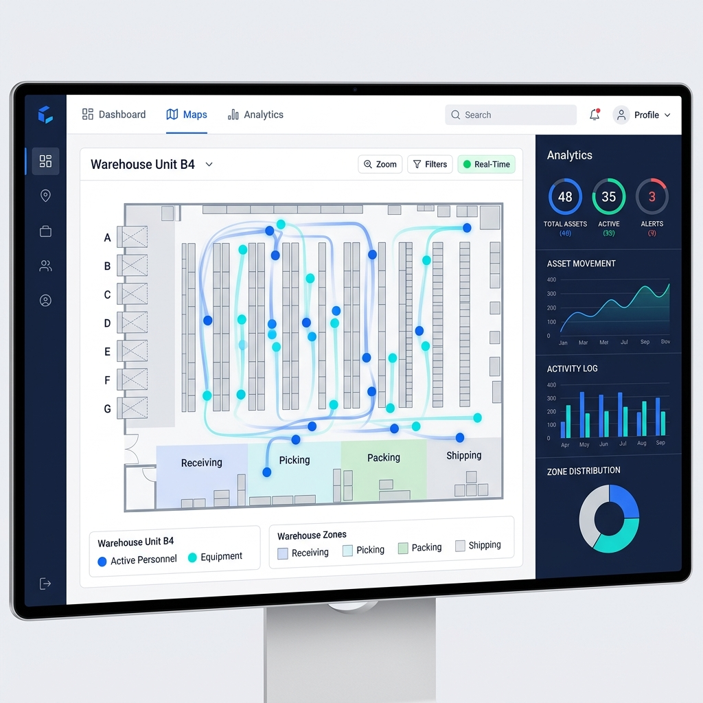

Pinmicro Solution is an RTLS / Location Intelligence DX platform that visualizes the real-time location of people, assets, and equipment across manufacturing floors, distribution centers, and warehouses — enabling reduced search time, flow optimization, dwell-time analysis, and safety management.
Built around the dSense SaaS platform, it combines BLE, UWB, smartphones, smartwatches, GPS, and cameras to deliver the optimal location system for your facility and objectives.

Across manufacturing, logistics, warehousing, and facility management, significant time and effort are spent tracking the movement, dwell, and whereabouts of people and assets.
Pinmicro Solution captures in-facility location data using BLE and UWB, then visualizes and analyzes it in real time on the dSense SaaS platform — empowering the data-driven improvements your operations need.
Going beyond simple location display, it analyzes work-flow paths, dwell times, search times, and area utilization to drive operational improvement, safety management, and productivity gains.
Combined with Innovature Technologies' expertise in DX, cloud, AI, and data analytics, the location data captured on the floor is transformed into information that supports executive decision-making.
Tools, jigs, gauges, dies, carts, cage trolleys, returnable containers, and specialized racks — locating them takes too long.
Unable to determine how long operators, support staff, multi-skilled workers, or maintenance personnel spend in each process or area.
Movement during picking, transport, receiving/shipping, and replenishment is invisible — resulting in wasted travel and idle time.
Forklifts, transport carts, AGVs, and specialized racks — their routes and utilization cannot be quantitatively measured.
Even after improvement initiatives, there is no quantitative way to verify outcomes or plan the next steps.
Location data is captured, but insufficient data-utilization design prevents progression to full deployment or ROI evaluation.
Display the current location of people, assets, and equipment on a floor map. Quickly locate the resources you need and reduce search time.
Examples: tools, jigs, gauges, dies, carts, cage trolleys, returnable containers, specialized racks, operators, maintenance staff, etc.
Visualize movement routes and inter-area travel history. Identify unnecessary travel, detours, work-concentration areas, and congestion points.
Aggregate dwell time by process, area, and work spot. Useful for identifying bottlenecks, idle time, and workload imbalances.
Detect entry into hazardous areas, prolonged dwell, missing assets, and proximity events — then generate notifications and maintain audit logs.
Turn operational movement into daily, weekly, and monthly dashboards. Compare before-and-after results and support ROI evaluation.
Integrate real-time location data with your ERP, WMS, MES, and BI tools — so location intelligence becomes part of your daily operations, not a separate silo.
Supports external system integration via API, Webhook, and MQTT. Embed location data into existing workflows such as inventory management, process control, work orders, and quality assurance.
Pinmicro Solution uses the dSense SaaS platform as its core, combining BLE and UWB devices to match the objectives, accuracy requirements, cost, and environmental conditions of each facility.
SaaS platform for visualizing and analyzing location data. Supports floor map display, resource management, history analytics, alerts, and reports.
Ideal for area-level location management and cost-effective positioning. Used for people, tools, carts, returnable containers, and more.
Gateway that receives signals from BLE and UWB devices and relays data to the cloud.
Suited for applications requiring higher-precision positioning. Used when more granular tracking of people, vehicles, or critical assets is needed.
Fixed anchors for positioning UWB tags. Installed in factories, warehouses, and construction sites for high-precision indoor positioning.
The best positioning technology depends on what you need to track and why. Pinmicro Solution selects and combines BLE and UWB to design the right configuration for your facility.
| Use Case | Recommended | Characteristics |
|---|---|---|
| Tool, cart & container tracking | BLE | Cost-effective area-level management |
| Worker area dwell analysis | BLE | Suited for process-level and area-level dwell tracking |
| High-precision critical asset tracking | UWB | Suited for applications requiring finer position accuracy |
| Vehicle & transport flow analysis | UWB | Suited for movement tracking and zone-transit analysis |
| Small-scale pilot project | BLE or UWB | Selected based on objectives and accuracy requirements |
| Full deployment & optimization | BLE + UWB | Optimizing the balance between cost and precision |
* Positioning accuracy, communication stability, and the required number of anchors/gateways vary depending on the facility environment, installation conditions, obstructions, metallic objects, and operational methods.
Visualize how long workers and assets dwell at each process or work spot. Identify workload imbalances, idle time, and bottlenecks to support improvement activities.
Reduce time spent searching for items that cannot be found. Also useful for monitoring shared-asset usage and verifying returns.
Quickly locate available personnel nearby when incidents occur. Streamline maintenance response and support operations.
Detect whether people or assets are congregating around equipment, or whether prolonged dwell is occurring in specific areas. Supports safety management and layout improvement.
Visualize the whereabouts of in-warehouse mobile assets to reduce search time and minimize stagnation.
Analyze worker and transport-equipment movement routes. Identify unnecessary travel and detours to improve picking routes and warehouse layout.
Visualize congestion in receiving/shipping, inspection, and staging areas. Useful for adjusting staffing and revising work plans.
Analyze forklift and transport-equipment movement, stops, and dwell areas to understand utilization and identify congestion hotspots.
Understand the target assets, facility layout, required accuracy, and operational objectives.
Evaluate BLE, UWB, or hybrid configurations based on your requirements.
Define target areas, tag counts, anchor/gateway placement, and evaluation criteria.
Verify positioning accuracy, communication stability, and operational viability in the actual environment.
Organize metrics into dashboards that facility managers and executives can use effectively.
Scale the coverage area and leverage data for ongoing operational improvement.
Pinmicro Solution goes beyond location capture. Combined with Innovature Technologies' DX development, cloud, AI, and data analytics expertise, it transforms on-floor data into higher-value intelligence.
By digitizing facility movement and integrating with business systems, BI dashboards, and AI analytics, it accelerates improvement initiatives and executive decision-making.
We recommend device configurations — BLE, UWB, GPS, smartphones, cameras — tailored to your facility environment.
Real-time location visualization with history analytics and reporting capabilities.
Data utilization designed with existing business systems and BI tool integration in mind.
Analyze collected location data — flow, dwell, congestion, utilization — and deliver actionable improvement insights.
From the pilot stage, we design with full-deployment operations, KPIs, and ROI evaluation in mind.
Pinmicro Solution is used to visualize people, assets, and equipment across manufacturing floors, distribution warehouses, facility management, event venues, and more.
Specific case studies will be published progressively as permissions are obtained.
Download useful guides to support your location intelligence DX evaluation.
Please fill in your contact information to download.
A checklist of key items to verify before deploying a UWB positioning system — covering facility environment, installation conditions, and operational considerations.
A clear comparison of BLE, UWB, GPS, Wi-Fi and other major positioning technologies — covering features, accuracy, and cost differences.
A practical guide to solving the three most common challenges on the factory and warehouse floor — "searching", "invisible movement", and "stalled pilots" — using location intelligence DX.
Whether you're exploring location intelligence for manufacturing, logistics, warehousing, or facility management — whether you need a pilot or a full deployment — we're here to help.
We'll recommend the optimal BLE, UWB, or hybrid configuration based on your facility challenges.
Worker movement, asset locations, vehicle utilization, process-level dwell time — what you need to visualize depends on your facility.
Pinmicro Solution provides end-to-end support: from challenge discovery and technology selection, through pilot design, dashboarding, to AI-driven analytics.